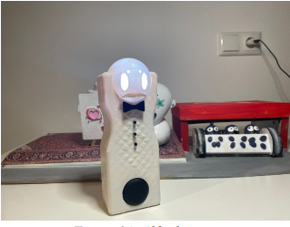
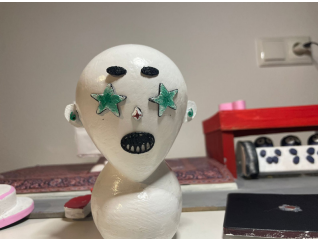
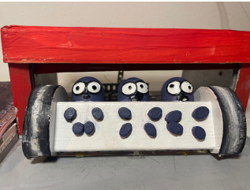
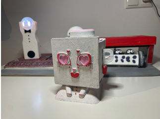

I worked with real users and clients for first time
Saw users struggle with the bad UI of Kitchencompass
Used new ways of interacting with technology – people were just confused
Not enough testing = bad results
Learned that feedback helps improve design
Learned how to do interviews & research before designing
Lesson: → Test with real users + test as much as possible + be structured in your testing
→ Ask people what they need
→ Design is about their experience, not just your idea
🟨WORKING WITH CLIENTS (ZELIOX)
Did not know how to interact with clients + what to ask
Learned to explain ideas clearly
Learned to show prototypes in a way people understand
Learned how to work together with client
Lesson: → Good questions = better feedback
→ Preparation creates confidence
→ Clients are part of the design, not outside it
🟪SOCIAL + ETHICAL THINKING
More-Than-Human Design: thought about nature + non-human things
Saw that designs have big impact on society and environment
Design can change habits and systems
Lesson: → Think beyond the user
→ Design = responsibility
→ Good design thinks about people, animals, and the planet
🟧CREATIVE INTERACTION (AESTHETICS OF INTERACTION)
Built fun alarm clocks
Created weird and playful interactions
Emotions and surprises powerful design tool
Broke normal rules to make something new

Figure 7 Fun Alarm Clock 1

Figure 8 Fun Alarm Clock 2

Figure 9 Fun Alarm Clock 3

Figure 10 Fun Alarm Clock 4
Lesson: → Design can be playful
→ Emotions matter
→ Creative design = stronger experiences
🔷FEELINGS & CHALLENGES
Unsure when users became confused
Did not test enough
Often stressed from doing to much work in group
Low confidence in client meetings
Stress from clients meetings
🟫GROWTH & INSIGHTS
Learned to test more + think as users
Now what questions to ask client
Learned to test and change designs based on feedback
Designs affects not just humans but everything in our world
✅ACTION PLAN (WHAT I’LL DO NEXT)
Talk to users early in the process
Use research + testing to improve your designs - start doing this at the start of the process
Work with clients, not just for them
Realize the impact your designs have on the natural world